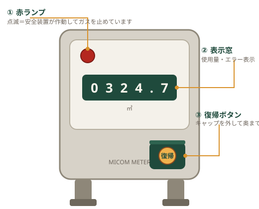

Emergency
災害・緊急時の案内
地震・停電・ガスもれのときの対応手順をまとめています。まずは身の安全を第一に確保してください。
供給状況
最終更新：○月○日 ○時○分現在、ガスの供給に影響はありません。災害発生時はこの欄に、地区ごとの供給停止・復旧見込みを掲載します。
| 地区 | 状況 | 復旧見込み |
|---|---|---|
| ○○町・○○町 | 通常供給 | — |
| ○○団地 | 通常供給 | — |
※実運用では、気象庁の地震情報（震度5弱以上など）を受信すると全ページに緊急アラートを自動表示し、担当者がスマートフォンからこの欄を更新できるようにします。サーバーは2拠点で冗長化し、片方が停止しても表示を継続します。
Gas Leak
ガスの臭いがしたら
- 火気は絶対に使わないライター・マッチはもちろん、換気扇・電気スイッチも操作しないでください（火花が出ることがあります）。
- 窓や戸を開けて換気するガスを外へ出します。LPガスは空気より重く、床にたまります。
- 器具栓・元栓・メーターガス栓を閉める使用中の器具を止め、元栓を閉めます。
- 屋外から当社へ連絡する室内では電話を使わず、屋外の安全な場所から。24時間受け付けています。
ガスもれ・緊急のご連絡（24時間）
0000-00-0000
スマートフォンではタップすると発信前に確認が表示されます
ガス警報器が鳴ったら
警報器が鳴った場合も同じ手順で対応してください。警報器の電源は抜かず、換気のうえご連絡ください。
Recovery
マイコンメーターの復帰手順
地震（震度5相当以上）や長時間の使用、ガスの異常な流れを検知すると、マイコンメーターが自動でガスを止めます。災害時だけでなく、日常でも赤ランプが点滅することがあります。安全を確認できれば、ご自身で復帰できます。
マイコンメーターとは
ガスの使用量を計るメーターに、地震・異常流量・長時間使用を検知して自動でガスを止める安全装置を組み込んだものです。ほとんどのご家庭に設置されています。

- すべてのガス機器を止める器具栓を閉め、使っていない機器も確認します。屋外の給湯器も含みます。
- 復帰ボタンのキャップを外すメーター左下（機種により位置が異なります）の黒いキャップを左に回して外します。
- 復帰ボタンをしっかり押して手を離す奥まで押し込むと赤ランプが点灯し、手を離すと再び点滅を始めます。キャップを元に戻します。
- 約3分待つこの間、ガスは使わないでください。メーターが安全を確認しています。
- ランプの消灯を確認して使用再開点滅が止まっていれば復帰完了です。まだ点滅している場合は、ガスもれの可能性があります。使用せず当社へご連絡ください。
復帰手順の動画（1分）をここに埋め込みます — 撮影後に差し替え
Earthquake
地震のときは
揺れを感じたら、まず身の安全を確保してください。揺れている最中に火を消そうとしないでください。マイコンメーターが自動でガスを止めます。
- 揺れが収まってから、器具栓・元栓を閉める
- ガスの臭いがしないか確認。臭う場合は「ガスの臭いがしたら」の手順へ
- 臭いがなければ、上の手順でメーターを復帰
- 避難する際は元栓を閉め、可能ならメーターガス栓も閉める
💡 停電のときは
給湯器・ファンヒーター・床暖房など電気を使うガス機器は、停電中は使えません。復電後は取扱説明書に従って再運転してください。ガスコンロ（電池式）は停電中も使えます。
❄ 冬季の注意
給湯器の凍結防止のため、長期の停電時は水抜きをご検討ください。手順は よくあるご質問 をご覧ください。メーター周りの除雪にもご協力をお願いします。
防災のしおり（PDF）要リンク